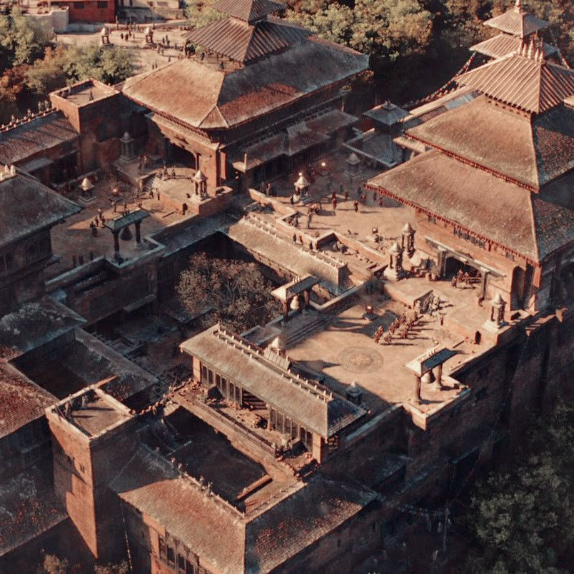
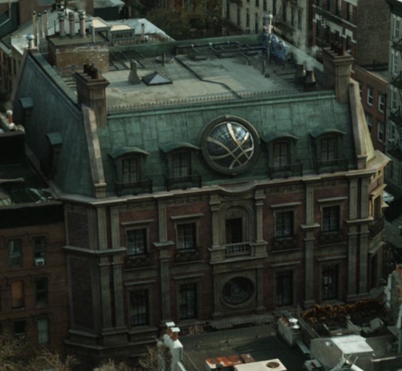
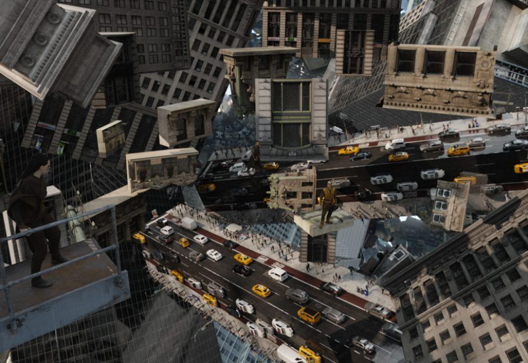
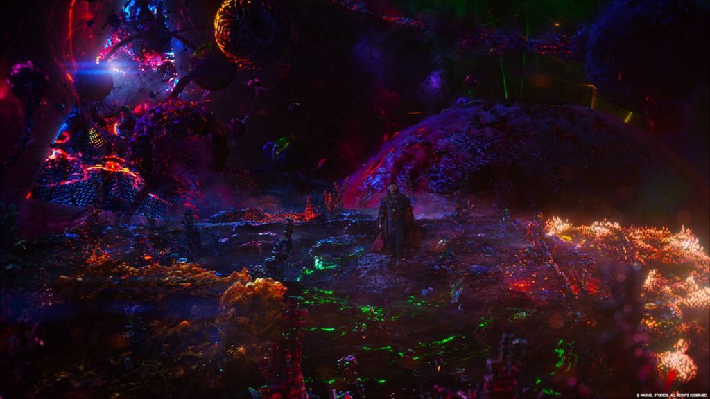

UBICACIONES IMPORTANTES
KAMAR-TAJ (Katmandu, Nepal)

Es el santuario oculto donde Stephen Strange comienza su viaje. A simple vista parece un monasterio antiguo y sencillo, pero en realidad es el centro de entrenamiento para los Maestros de las Artes Místicas y la sede de una de las bibliotecas más importantes del mundo mágico. Aquí es donde se aprende a manipular la realidad.Ubicación real de Kamar-Taj (Katmandú)
SANCTUM SANCTORUM (New York)

Es la residencia de Doctor Strange en el Greenwich Village. Es uno de los tres grandes santuarios que protegen la Tierra de amenazas interdimensionales. Lo más característico es su gran ventana circular con el "Sello de los Vishanti", que sirve como un escudo protector contra invasiones mágicas.LA DIMENSION ESPEJO

Es una dimensión paralela que coexiste con la nuestra, pero en la que los hechiceros pueden entrenar y luchar sin afectar el mundo real. En este lugar, las leyes de la física son maleables: los edificios se doblan, la gravedad cambia y el espacio se fragmenta como si fuera un cristal.LA DIMENSION OSCURA

Un lugar donde el tiempo no existe, gobernado por la entidad conocida como Dormammu. Visualmente es una mezcla caótica de colores vibrantes, nebulosas y formas orgánicas extrañas. Es el origen del poder de Kaecilius y representa la mayor amenaza para el Multiverso.